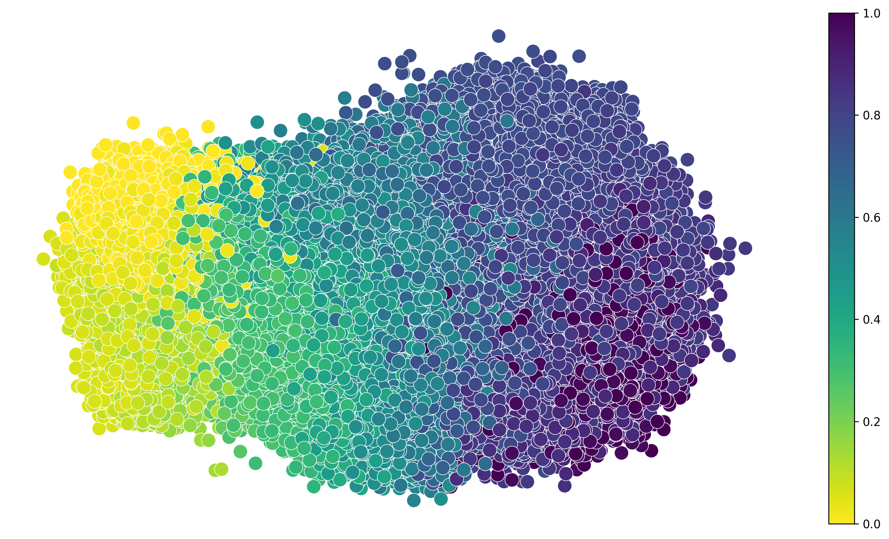
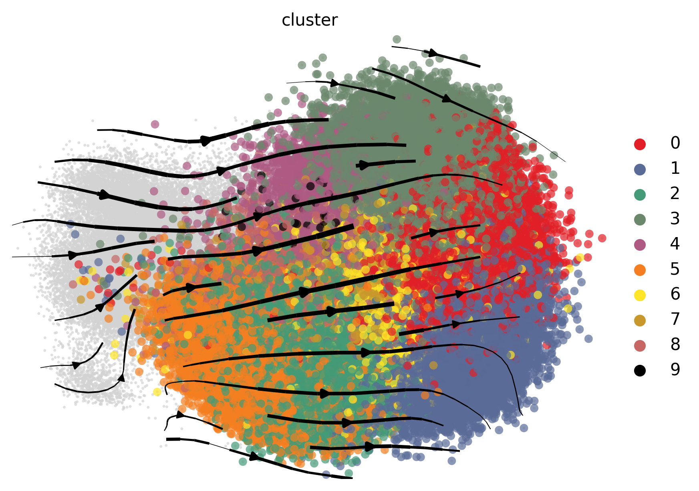
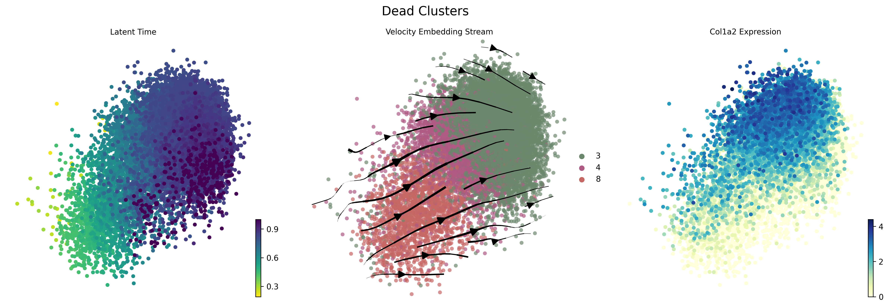
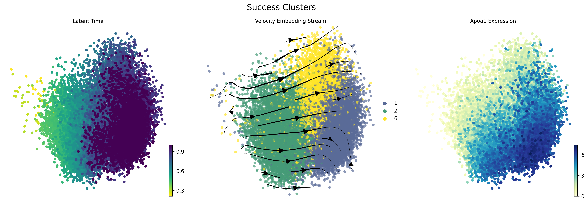

Reprogramming demo
[1]:
import sdevelo as sv
import cellrank as cr
import pandas as pd
adata = cr.datasets.reprogramming_morris()
# Remove rows where 'reprogramming_day' is NaN
adata = adata[~pd.isna(adata.obs['reprogramming_day']), :]
args = sv.Config()
sv.cuda_device = 1
args.vis_type_col = 'reprogramming_day'
(Working on SDEvelo)
2024-09-13 15:27:51
[2]:
model = sv.SDENN(args, adata)
adata = model.train(args.nEpochs)
cuda
Filtered out 11025 genes that are detected 20 counts (shared).
Normalized count data: X, spliced, unspliced.
Extracted 2000 highly variable genes.
Logarithmized X.
computing neighbors
finished (0:02:58) --> added
'distances' and 'connectivities', weighted adjacency matrices (adata.obsp)
computing moments based on connectivities
finished (0:00:11) --> added
'Ms' and 'Mu', moments of un/spliced abundances (adata.layers)
5000
Epoch: 0, Loss: 1.073, alpha: 0.01, beta: 0.89, gamma: 0.01, s1: 0.019, s2: 0.027, t_m: 0.100, u_shift: 0.000, s_shift: 0.000
Epoch: 50, Loss: 0.523, alpha: 0.01, beta: 4.15, gamma: 10.12, s1: 0.010, s2: 0.134, t_m: 0.118, u_shift: 0.000, s_shift: 0.000
Epoch: 100, Loss: 0.438, alpha: 0.01, beta: 4.58, gamma: 16.61, s1: 0.010, s2: 0.188, t_m: 0.143, u_shift: 0.000, s_shift: 0.000
Epoch: 150, Loss: 0.386, alpha: 0.01, beta: 5.09, gamma: 22.04, s1: 0.010, s2: 0.222, t_m: 0.170, u_shift: 0.000, s_shift: 0.000
Epoch: 200, Loss: 0.388, alpha: 0.01, beta: 5.54, gamma: 26.30, s1: 0.010, s2: 0.255, t_m: 0.196, u_shift: 0.000, s_shift: 0.000
Epoch: 250, Loss: 0.381, alpha: 0.01, beta: 5.58, gamma: 26.76, s1: 0.011, s2: 0.253, t_m: 0.214, u_shift: 0.000, s_shift: 0.000
[4]:
sv.plot_latent_time(adata, args)

[5]:
import scvelo as scv
import warnings
from matplotlib import MatplotlibDeprecationWarning
# Suppress specific MatplotlibDeprecationWarning from the mentioned module
warnings.filterwarnings("ignore", category=MatplotlibDeprecationWarning, module="scvelo.plotting.utils")
scv.pl.velocity_embedding_stream(adata, density=0.5, linewidth=2.0, basis='pca', dpi=300, s=100, alpha=0.7,
vkey='sde_velocity', color='cluster', legend_loc='right margin')

[6]:
# Plot for "dead" clusters
dead_clusters = ['8', '4', '3']
fig1 = sv.plot_subset(adata, dead_clusters, 'Col1a2', 'Dead Clusters')

[7]:
# Plot for "success" clusters
success_clusters = ['2', '6', '1']
fig2 = sv.plot_subset(adata, success_clusters, 'Apoa1', 'Success Clusters')

[ ]: